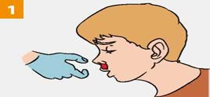
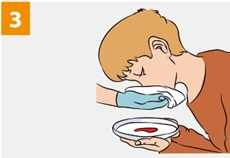

ПЕРВАЯ ПОМОЩЬ ПРИ НОСОВОМ КРОВОТЕЧЕНИИ

|
При носовом кровотечении усади пострадавшего, слегка наклони его голову вперёд. Сожми крылья носа на 15-20 минут. При этом пострадавший должен дышать ртом! |
Приложи холод к переносице (мокрый платок, снег, лед). |
|

|
Рекомендуй пострадавшему сплевывать кровь (при попадании крови в желудок может развиться рвота). |
Если кровотечение в течение 15-20 минут не останавливается, вызови скорую медицинскую помощь. |
Источник:
http://www.culture.mchs.gov.ru/medical/algorithms_of_first_aid_to_victims_of_traumatic_injuries_and_urgent_situations/first_aid_for_bleeding_from_the_nose/
ТЕЛЕФОН СЛУЖБЫ СПАСЕНИЯ: 112